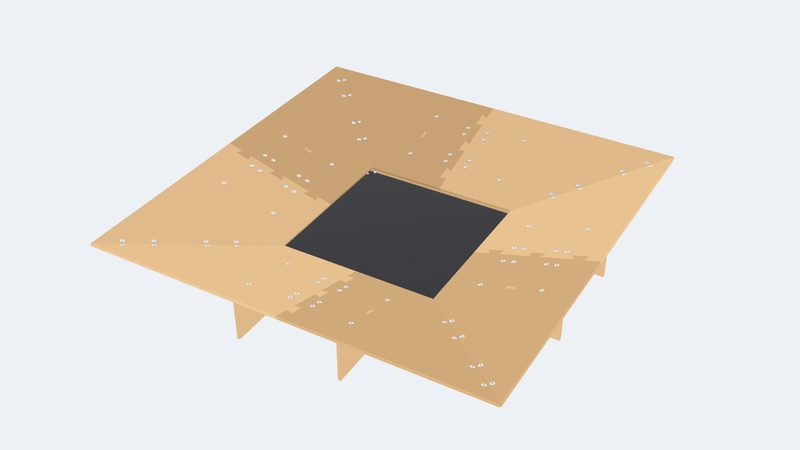
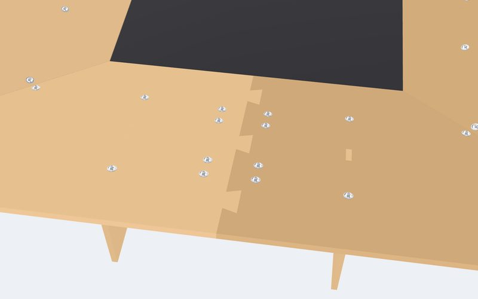
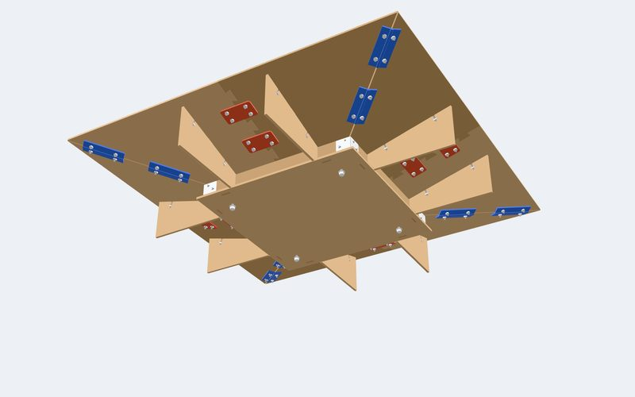

A dock that lets a drone land, charge and relaunch from an unmanned boat
Offshore drone inspections need a crewed vessel nearby. This dock rides on a 3 to 5 m unmanned boat instead, so the drone can stay out for weeks. I build the landing funnel, the drone that lands in it, and the boat-side power and control.
Lands in the lab, including on a moving platform, and charges. Not yet on water.

- Where
- MIT Beaver Works, Hart lab, undergraduate research
- Dates
- June 2026 to present
- My part
- Landing funnel, drone build and configuration, charging contact and clamp design, boat power wiring, boat control and telemetry
- Tools
- Onshape, laser cutter, FDM printing, PX4, Arduino, crimping and soldering
- Credit
- Part of Vasu Kaker's thesis, advised by Prof. Douglas Hart
The problem
A drone coming down on a small boat deck in waves will not hit a charging contact by itself. Published accuracy for vision-guided landings like this is a few tens of centimeters. The charging contacts need about a centimeter.
The dock closes that gap mechanically: a funnel catches a sloppy landing and gravity slides the drone to the center, where it is held and charged.
Where it stands
- The drone, a Holybro X650 on PX4, lands itself in the funnel on the vision marker. The landing software is Vasu's; the funnel and the drone build are mine.
- It has landed with the pitch and roll platform under the dock moving.
- It has charged through the dock's contact pads.
- The reworked magnetic clamp and the ring-and-pin contacts described below are designed, not yet built.
- The boat's control, video and battery telemetry ran end to end on the bench in August. That is its own page: driving the boat over a satellite link.
- Nothing has been tested on water yet.
The funnel
The funnel is 6 mm MDF on eight ribs, bolted with stainless #8-32 hardware because it will live in salt air. Ribs slot into the center box and hold captive square nuts in T-slot pockets, so every flap bolts down from the top.
Made to fit the laser I had
The flaps are 35 in wide and the laser bed is 32 x 18 in. Rather than find a bigger machine, I split each flap down its centerline into two 17.4 in halves. Three laser-cut dovetails and two printed splice brackets underneath join each seam.
All ten blanks nest onto four 24 x 36 in sheets. The cut files come from one parametric script, so a change to the bed size or sheet thickness regenerates every blank, and a script check found zero interferences across the 330 bodies in the assembly.



Measured the fit, then regenerated the parts
Laser kerf widens every slot, and a press fit in MDF has almost no tolerance. The first files drew slots at 0.232 in for 0.236 in stock. Before cutting four sheets I cut a coupon with six slot widths from 0.220 to 0.240 in and three dovetail offsets, and tried each by hand.
The best fit was the tightest slot, 0.220 in, and dovetail sockets 0.008 in undersize per side. All ten blanks were regenerated with those values.
What broke
The drone landed in the funnel but would not slide to the center
The first plan was new landing gear: a narrower stance with PTFE ball feet on printed clamps, about $200 to $300 and a week of work. Before any of that was built, the symptom got a second look. The same feet slid fine on the lab's vinyl platform. A foot that works on one surface and not another points at the surface.
On a 16 degree wall a foot slides only if the friction coefficient is below tan 16°, which is 0.29. Raw MDF sits at or above that. The screw heads standing proud of the flaps were a second problem: a sliding foot of this size can only climb a step of about 0.13 to 0.20 mm.
The fix was to sink the screw heads flush and face each flap with UHMW tape. The drone now slides to center.
The limit tightens as the deck tilts: 0.19 at 5 degrees and 0.10 at 10 degrees, which is the edge of what the tape can do.

A clamp that would have let go without anyone noticing
In the clamp design, the drone is held down by an electromagnetic lock rated for 60 kg. In my first layout the magnet's pull line and the point that reacts it were 60.6 mm apart. At full pull that is a 36.4 N·m couple, and the drone's weight on its landing gear resists with about 4.5 N·m. The drone would pitch, and 2 degrees of tilt at the plate opens a 1.29 mm gap.
That matters because a maglock holds but cannot pull: at a 1 mm gap it makes single-digit newtons. Worse, the fault is silent. It passes any bench test where someone steadies the drone by hand.
The fix is geometric: hard reaction pads outboard of the magnet, so the pull is reacted where it is applied. I put the layout through a load-path review before building any of it, and this is what the review found. The rework is on paper.

Charging pad wires kept breaking at the solder joint
The joint was carrying the flexing. I changed the pads to through-hole connections, potted them in epoxy and added strain relief so the wire bends somewhere it can survive.
The new drone thought it had eight motors
The X650's flight controller arrived configured as a coaxial octocopter. I backed up all 1,101 parameters first, changed the airframe to a quadrotor, rebooted, and confirmed the controller reported a quadrotor with four rotors before going any further.
The drone
I assembled and wired the Holybro X650, a 650 mm quadrotor running PX4, corrected its airframe configuration, and brought up its telemetry radio link. It replaced a smaller first-generation drone used for the early landing tests.
Charging contacts
The drone can land at any heading, so the contact design puts concentric rings on the drone and spring pins on the dock. Contact force set the design. Bare copper needs 13 to 18 N to break through its oxide, and the whole dock has about 4 N to spend. So the design uses gold-plated spring pins at about 1.2 N each, which fits inside that budget.
Wireless charging was ruled out on mass: the receiver alone would be 11 to 16% of the drone's flying weight.
Rules for modifying the airframe
Agreed in August, before the drone-side parts were drawn:
- Never drill the carbon tubes. Everything mounts with split clamps.
- Printed parts in PETG, nylon or carbon-fiber nylon only.
- Nothing hangs below the skids unless it is faired, because the skids double as skis.
Credits
This dock is Vasu Kaker's thesis project, advised by Prof. Douglas Hart in MIT Mechanical Engineering. The dock concept, the vision-guided landing and the way the dock mounts to the boat are Vasu's. The funnel, the drone build, the charging and clamp design, and the boat wiring and control link are mine.